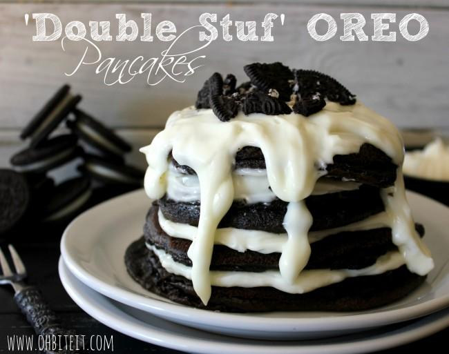

Double Stuf OREO Pancakes

Ingredients:
- 1 package of Double Stuf OREO cookies
- 2 cups pancake mix
- 1 1/2 cups milk
- 1/4 cup mascarpone cheese
- 2 tablespoons sugar
- 1 teaspoon vanilla extract
- Whipped cream (optional)
- Chocolate sauce (optional)
Instructions:
- Separate the OREO cookies and set the filling aside.
- In a large bowl, combine the pancake mix, milk, mascarpone cheese, sugar, and vanilla extract. Stir until well combined.
- Heat a non-stick skillet or griddle over medium heat.
- For each pancake, pour 1/4 cup of batter onto the skillet or griddle. Place 1 teaspoon of the OREO filling onto the center of each pancake.
- Cook the pancakes until bubbles form on the surface, then flip and cook until golden brown.
- Serve the pancakes with whipped cream and chocolate sauce, if desired.
- Enjoy!